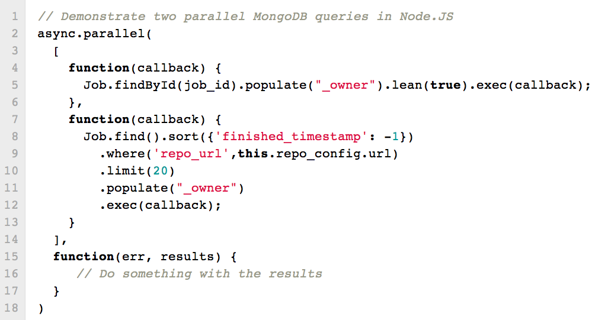
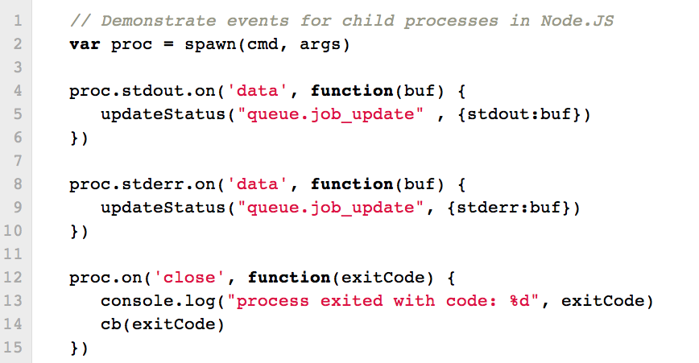

Node.JS, MongoDB & PaaS
A light{hearted,ning} talk about JavaScript, database and cloud technology
by
@niallohiggins
MongoSV 2012
LAMP Stack
Linux
Apache
MySQL
Perl/PHP/Python
???? Stack
Node.JS
MongoDB
PaaS
NOMP
But Srsly
Why is Node.JS good?
JavaScript is good for evented/async programming
Single process, asynchronous model yields memory efficient concurrency
E.g. query a database and make 5 HTTP requests simultaneously
In the cloud, memory is expensive
V8 is a fast VM
Same language as browser code
JIFASNIF: "
Javascript Is Fun And So Node Is Fun
" -
@maxogden
Node.JS Example: Concurrent IO

Node.JS Example 2: Events

MongoDB with Node.JS
Excellent driver support
Comprehensive ODM - Mongoose
Fits very neatly with JavaScript
Works great!
MongoDB with PaaS
MongoLab, MongoHQ
heroku addons:add mongolab:starter
Zero application config w/
everypaas
library
var mongoUrl = everypaas.getMongodbUrl()
Super fast to get up and running
Amazing opportunities for Open Source web apps!
Example/Plug: Strider-CD.com
Continuous Integration & Deployment platform in Node.JS and MongoDB
BSD license
Run private instance
for free
on Heroku
Or on your own infrastructure
See:
http://strider-cd.com
Thanks for listening! Contact:
@niallohiggins
←
→
/
Go to slide:
#